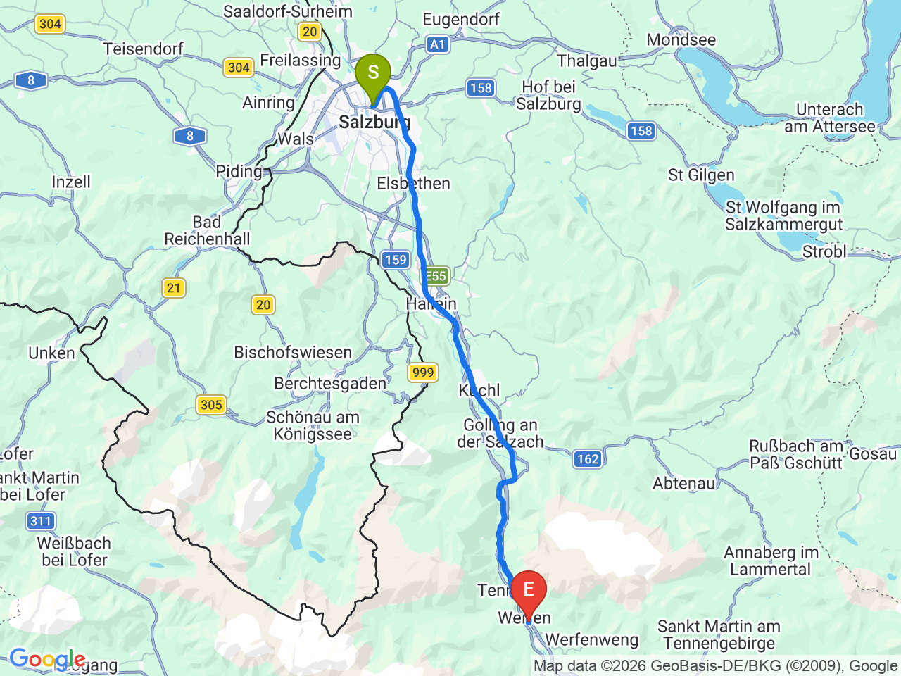
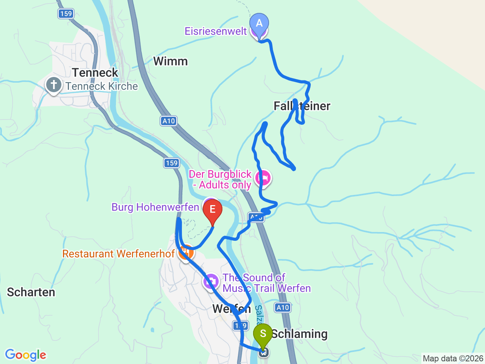

Day 32 · 2026-09-16（三）
奧地利・薩爾茲堡/德國國王湖/維也納 Day 4/9
世界最大冰洞與鷹之城堡：Werfen 一日遊
搭火車南下 Werfen，上午探 0°C 的 Eisriesenwelt 冰洞，下午登 Hohenwerfen 城堡看飛鷹秀
💱Eisriesenwelt冰洞2026年開放至11/1，9/16仍在營運季內；因洞內容量限制，線上購票會指定30分鐘入場時段，旺季建議提前上 eisriesenwelt.at 購票，避免現場候補人潮
⏰飛鷹秀一天只有11:15與15:15兩場（4-11月適用；7/14-8/15暑假旺季另有加場，9/16不適用），這天目標是15:15場——上午冰洞行程如果delay，要優先確保趕得上15:15，不然就得等到隔天，沒有補場；冰洞內約0°C、上下約700階，務必穿保暖外套＋防滑好走的鞋，洞內禁止拍照
薩爾茲堡→Werfen 火車

Werfen 冰洞＋城堡路線

固定時間行程DAY 32
| 時間 | 地點 | 地點 (英文) | 交通方式／班次 | 價格 | 預計停留(分鐘) | 備註 |
|---|---|---|---|---|---|---|
| 07:00 | 薩爾茲堡中央車站搭 S3/REX 火車前往 Werfen | 火車約40分鐘 | 每小時約1班，確切班次請以 ÖBB 查詢9/16實際時刻為準 | |||
| ~07:50 | 抵達 Werfen 車站 | 1Werfen Bahnhof, Austria | 步行至村中心後搭冰洞接駁巴士上山（約12分鐘） | |||
| 08:30 | Eisriesenwelt 遊客中心售票處開門，換取/購票 | 2Eisriesenwelt, Austria | 聯票（纜車+洞穴導覽）線上€38／現場€42 | 強烈建議事先線上買 eisriesenwelt.at，可預約30分鐘入場時段 | ||
| 08:45 | 搭首班纜車上山＋步行至洞口 | 纜車約3分鐘＋步行約20分鐘 | 纜車段可看 Salzach 河谷景觀 | |||
| 09:30 | 冰洞導覽 | 導覽約70分鐘 | 70 | 洞內約0°C、上下約700階，需保暖外套+好走的鞋；洞內禁止拍照 | ||
| ~11:15 | 步行＋纜車＋接駁下山 | |||||
| ~12:15 | 午餐：Werfen 鎮上 | 見上方三餐資訊 | 90 | |||
| ~13:45 | 上 Hohenwerfen 城堡 | 3Burg Hohenwerfen, Austria | 步行上山約20分鐘，或搭斜坡電梯 | 門票約€15.4（步行）／€19.4（含電梯） | 含城堡導覽+獵鷹博物館，價格請再以官網確認 burg-hohenwerfen.at | |
| 15:15 | 飛鷹秀 | 約25分鐘，視天氣 | 25 | 4-11月場次為11:15與15:15；今天目標是這一場，務必抓好時間 | ||
| ~16:30 | 下山，火車返回薩爾茲堡 | |||||
| ~17:30 | 抵達薩爾茲堡，晚餐老城區自由選擇 | 見上方三餐資訊 |
彈性探索景點DAY 32
| 地點 | 地點 (英文) | 預計停留(分鐘) | 價格 | 備註 |
|---|---|---|---|---|
| Hohenwerfen 城堡內部展覽（武器博物館／獵鷹博物館） | ABurg Hohenwerfen, Austria | 約60分鐘 | 含在城堡門票內 | 電影《真善美》（The Sound of Music）其中一處外景地 |
| Werfen 鎮主街散步 | BWerfen, Austria | 約20-30分鐘 | 免費 | 小巧的阿爾卑斯山城，午餐前後可以隨意走走 |
每日三餐
早餐
飯店早餐（時間可能來不及，視情況調整）Austria Trend Hotel Europa Salzburg
07:00左右發車，多數飯店早餐06:30-07:00才開始供應，可能來不及坐下來吃；建議前一晚先買好麵包/水果路上吃，或詢問飯店是否能準備早餐盒
午餐
晚餐
薩爾茲堡老城區餐廳（自由選擇）約 €15-25／人
回程通常已經傍晚，回薩爾茲堡後就近解決
住宿資訊
Austria Trend Hotel Europa Salzburg
📍 Rainerstraße 31, 5020 Salzburg